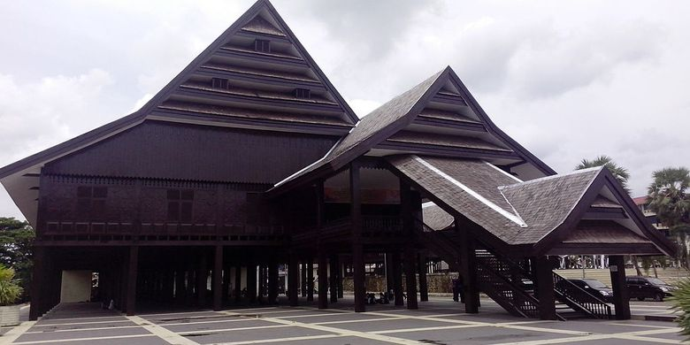

Menelusuri sejarah kejayaan nusantara abad ke-15 hingga 17
Kerajaan Makassar adalah salah satu kerajaan Islam terbesar di Nusantara pada abad ke-16 hingga 17. Kejayaannya tidak hanya di bidang pelayaran, tapi juga dalam penyebaran Islam dan perdagangan internasional.
Awalnya, Kerajaan Makassar adalah dua kerajaan yang berbeda yaitu Kerajaan Gowa dan Kerajaan Tallo. Kerajaan Gowa dan Kerajaan Tallo mengalami permasalahan politik sekitar abad ke-16. Kerajaan Gowa dan Tallo berusaha untuk mempertahankan serta mengembangkan kekuatan politiknya masing-masing. Pada pemerintahan raja Gowa ke-9 yakni, Daeng Matanre Karaeng Manguntungi Tumapa'risi Kallonna (berkuasa pada 1460-1510) berhasil menaklukkan kerajaan Tallo pada tahun 1490. Pada saat itu Kerajaan Tallo dipimpin oleh Samaran Luka Tunilabu ri Suriwa (Raja Tallo yang ke-2). Setelah Kerajaan Gowa menaklukkan Kerajaan Tallo, diadakan perjanjian setia disertai sumpah antara Raja Gowa dengan Raja Tallo serta Gellarang di balai Kerajaan. Perjanjian tersebut mencerminkan hubungan satu hamba tapi dua raja.
Agama Islam masuk dan tersebar oleh karena Datuk Ri Bandang, Datuk Patimang, dan Datuk Tiro pada abad ke-17 dan penerimaannya diresmikan pada 22 september 1605 M.
Sultan Khairun dibunuh oleh Portugis, memicu perlawanan besar yang dipimpin oleh Sultan Baabullah. Ternate berhasil mengusir Portugis dari Maluku.
Di bawah Sultan Baabullah, wilayah kekuasaan Ternate meluas hingga ke Filipina Selatan dan Papua Barat.